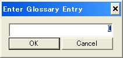
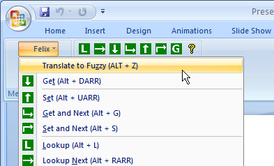

This section describes the various parts of the interface for Microsoft PowerPoint, and how to use them.
7.1 Look up a sentence
7.2 Retrieve a translation
7.3 Register a translation
7.4 Retrieve a glossary entry
7.5 Save your translation memory and glossary
7.6 Find concordance
7.7 Translate to fuzzy
Look up a segment in your Felix memory and glossaries. You can select the next segment automatically, or select a segment to look up yourself.
| Toolbar button | |
| Menu command | Lookup Next |
| Keyboard shortcut | Alt + → |
Place the cursor at the beginning of the text you wish to look up, then run the command using one of the methods above. The next segment of text is automatically selected, and sent to Felix as a query. If Felix is not currently running, it will be launched automatically.
| Toolbar button | |
| Menu command | Lookup |
| Keyboard shortcut | Alt + L |
Select the text you wish to look up, then run the command using one of the methods above. The current selection is automatically sent to Felix as a query. If Felix is not currently running, it will be launched automatically.
Tip: To extend the sentence lookup (e.g. to translate two or more sentences as a single unit), pressCtrl + →. To look up the current segment as a
translation rather than a source segment (to correct or review your translation),
hold down the Control key while performing the keyboard shortcut:
Ctrl + Alt + → to look up the next translation, and
Ctrl + Alt + L to look up the selection as a translation.
Retrieve a translation from Felix, and automatically insert it at the cursor position.
| Toolbar button | |
| Menu command | Get And Next |
| Keyboard shortcut | Alt + G |
When you run this command, the current translation displayed in Felix is automatically retrieved, and entered at the cursor position. PowerPoint Assist then looks up the next sentence automatically, and sends it to Felix as a query.
| Toolbar button | |
| Menu command | Get |
| Keyboard shortcut | Alt + ↓ |
When you run this command, the current translation displayed in Felix is automatically retrieved, and entered at the cursor position.
Register a translation for the current query.
| Toolbar button | |
| Menu command | Set And Next |
| Keyboard shortcut | Alt + S |
Place the cursor at the end of your translation, then run the command using one of the methods shown above. The text of your translation is automatically selected, and registered in Felix as the translation for the current query. If you have already selected a segment of text, that will be registered. PowerPoint Assist then looks up the next sentence, and sends it to Felix as a query.
Note that there must be an active query in Felix in order to use this function.
| Toolbar button | |
| Menu command | Set |
| Keyboard shortcut | Alt + ↑ |
Place the cursor at the end of your translation, then run the command using one of the methods shown above. The text of your translation is automatically selected, and registered in Felix as the translation for the current query. If you have already selected a segment of text, that will be registered.
Note that there must be an active query in Felix in order to use this function.
Retrieve a glossary entry from Felix, and automatically insert it at the cursor position.
| Toolbar button | |
| Menu command | Get Glossary Entry... |
| Keyboard shortcut | None |
When you run this command using one of the methods shown above, a dialog box appears, prompting you to enter a glossary entry number.

Enter the index of the glossary entry you desire, then click OK (or press Enter). The specified glossary translation is inserted into PowerPoint at the cursor position.
Save your translation memory and glossary files. Felix will prompt you for a file name and location if the memory or glossary is new.
You can find a word or phrase in your translation memory to see how you have translated it in the past. This feature is called “concordance.” To find the concordance for a word or phrase, select it and then select Felix >> Find Concordance from the menu.
Use this command to automatically translate all perfect matches until a non-perfect, or “fuzzy” match is found. To use this feature, from the Felix menu, select translate to fuzzy from the menu.
